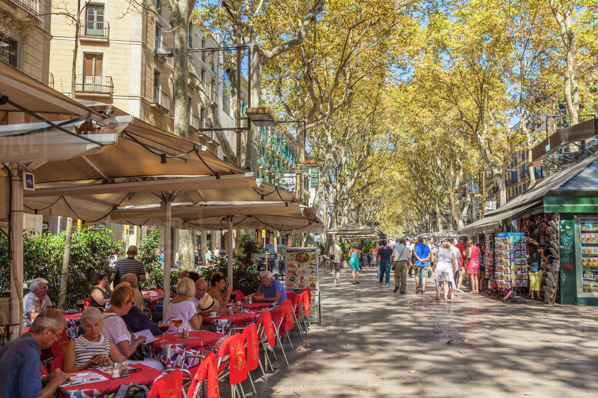
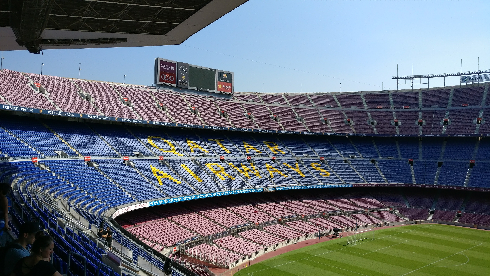
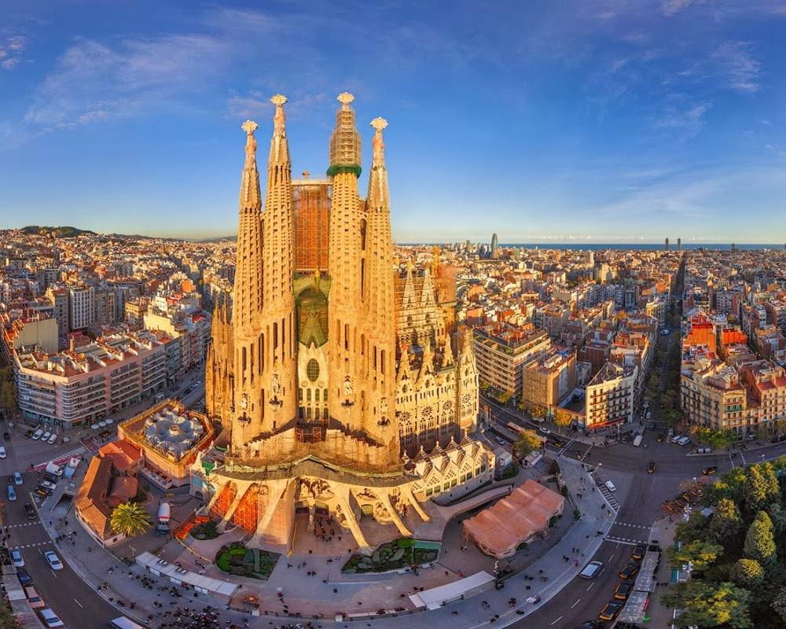

Top Ten things not to miss in Barcelona
- Stroll down Las Ramblas, Barcelona’s most famous thoroughfare that runs from the main square of the city (Plaza Catalunya) to the sea. The excitement of this street is unparalleled within the city with human statues, street performers, shops, bakeries, restaurants, jewelry stalls, artists, caricaturists and restaurants. Avoid the restaurants on the main strip as they tend to have a bad price/ quality ratio. Metro: Plaza Catalunya, Drassanes, Liceu
- Prepare yourself for a sensory overload as you take in the incredible sights and smells of the wonderfully colourful and bustling Boqueria food market. The market is one of the biggest of its kind in Europe, containing a huge variety of basic foods and Catalan specialties. It is said that what you do not find there you will not find elsewhere! There are also small tapas bars within the market that serve the freshest food in the city! Address: Rambla, 85-89. Web: www.laboqueria.info
- You will be spoilt for choice for restaurants and tapas bars dotted all over the city. Share portions (tapas) of “patatas bravas”, “Tortilla de patatas”, “Chorizo”, “Jamon Serrano”, “Morcilla”, “Croquetas”, “ Queso Manchego” and “pan con tomate” with friends and ask for more as and when required. Note that while tapas bars tent to be open all day, many formal restaurants do not open for dinner until 8/9pm as the locals dine late! You will notice that seafood dominates most restaurants. Make a booking at Botafumeiro for a special seafood treat Web: www.botafumeiro.es
- Enjoy the spectacular display of colour, light, motion, music and water acrobatics of the Magic Fountain at the foot of Montjuic. The designer submitted his plans one year before the 1929 Great Universal Exhibition and many thought that the project was too ambitious to be created, let alone completed on time, but 3000 workers made it happen. Thurs., Fri., Sat. and Sun.: 21:00 21:30 22:00 22:30 23:00 Entrance fee: Free. Address: Av. de Rius i Taulet. Metro: Plaza España.
- Catalan Antoni Gaudí’s architecture adorns the city and so you will find it, without even trying, but ensure you make time for the following masterpieces: * La Sagrada Familia: c/Mallorca 401. Metro: Sagrada Familia, www.sagradafamilia.org * Casa Battló: Pg. de Gràcia, 43. Metro: Passeig de Gracia. www.casabatllo.es * Casa Mila: Pg. de Gracia, 92. Metro: Diagonal. www.lapedreraeducacio.org * Parc Guell: Carrer d'Olot 3-5. Metro: Lesseps. www.bcn.es/parcsijardins
 Barceloneta Beach is the perfect place for sunbathing, a stroll along the promenade and for lunch al fresco at Aqua, Bestial or Sal Café. For a dinner and dancing experience try CDLC, Shoko or Opium, lounge restaurants in which you can dine with chill-out music and then transform into popular clubs until the early hours of the morning. Metro: Barceloneta and Ciutadella Villa Olimpica
Barceloneta Beach is the perfect place for sunbathing, a stroll along the promenade and for lunch al fresco at Aqua, Bestial or Sal Café. For a dinner and dancing experience try CDLC, Shoko or Opium, lounge restaurants in which you can dine with chill-out music and then transform into popular clubs until the early hours of the morning. Metro: Barceloneta and Ciutadella Villa Olimpica- Visit the Tibidabo amusement park during the day and stop off at Mirablau bar for unparalleled panoramic views of the entire city. Mirablau address: Plaça Dr Andreu. Tel: +34 934185879 (FGC Linea 7 (Brown Line) from Plaza de Catalunya Metro to Avenida Tibidabo and then the Tramvia Blau (a proper old fashioned tram) up the mountain.
- Run by the same family since the 1930s, El Xampanyet is a tiny traditional cava (Catalan’s champagne equivalent). It is always full and bursting with atmosphere and a chaotic excitement as people of all ages, many of which are locals squeeze into the small room of blue-tiled walls. The cava is served by the bottle at low prices and served in wide, shallow champagne glasses. Address: C/Montcada 22, Weekdays: 18.30 - 23.30 Weekends: 18.30 - 23.30
- Prepare to be tempted to splurge in the shops in Barcelona. The best shopping areas in central Barcelona are Passeig de Gracia and the streets to its southwest, including the Boulevard Rosa arcade just north of Carrer d'Arago, and Barri Gotic streets such as Carrer de la Portaferrissa, Carrer de la Boqueria, Carrer del Call, Carrer de la Llibreteria and Carrer de Ferran, and around Placa de Sant Josep Oriol.
-  Camp Nou, is the home to one of international football’s biggest teams – Barcelona FC. Each day the stadium is open to the public with tours. The tours finish one hour before the museum closes. Metro: Maria Cristina Web: www.fcbarcelona.com
Top Tip – Watch your belongings

As in all big cities and especially one as popular as Barcelona, clever thieves are on the look out for opportunities. Be extremely vigilant especially on the Ramblas, the underground and any touristy area. Carry only the essentials and leave other valuables in the hotel safe. If you must carry a bag, wear one that crosses over your chest instead of hanging from your arm or shoulder.
The Ramblas has lots of entertaining acts for you and stopping to watch presents the perfect distraction for pick-pockets. Another Ramblas favourite is a game with a ball and 3 small cups and you have to guess where the ball is, one of the gang who passes for an unsuspecting victim hands over a €50 note and “wins”, and then once enticed, you’ll find that your €50 note does a vanishing trick.
Most importantly, don’t be put off by all of this, Barcelona really is a magical place with so much to see and do, just remember to be aware and wise whilst out and about.